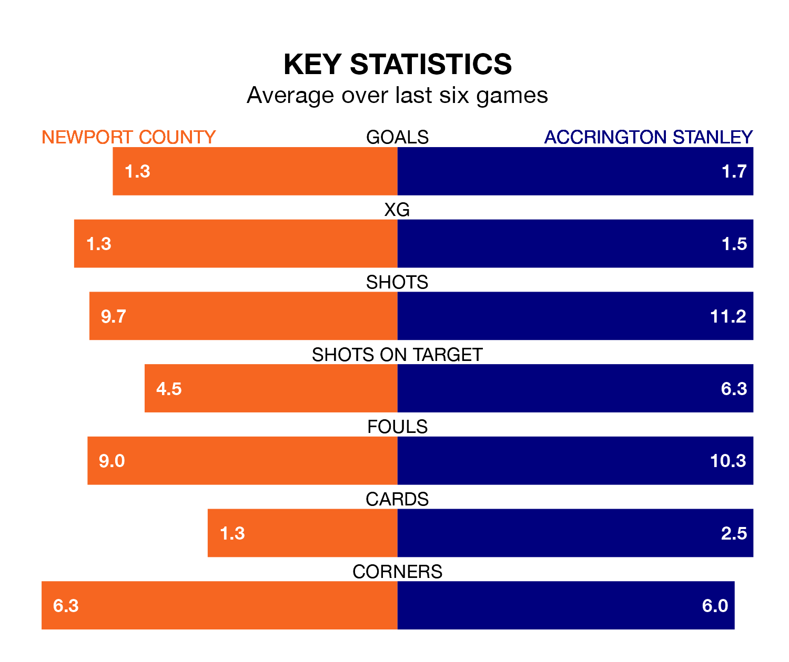

Accrington Stanley travel to Newport County on Saturday in EFL League Two.
The visitors come into the game on the back of a win in their last match, having beaten Salford City 3-0 at home, with two goals from Jack Nolan and one from Shaun Whalley.
The Exiles, meanwhile, drew their last match, 1-1 against Sutton United, with their goal scored by Shane McLoughlin.
In Will Evans, Newport have one of the league's sharpest shooters so far this season. He has notched 15 goals in 26 appearances, to sit third in the scoring charts.
His goal rate of one every 142 minutes is quicker than that of Nolan, Accrington's top scorer with a goal every 213 minutes, and a total of eight goals in 25 games.
With 38 goals in 26 games so far this season, County are scoring at the league's average rate with 1.5 goals per game. And they are conceding more than average, letting in 45 goals at a rate of 1.7 per game.
Stanley are also average scorers, with 1.5 goals per game. They have conceded 1.4 goals per game.
The Exiles are 18th in the table after 26 games, of which they have won eight and drawn seven, earning 31 points.
The away team are nine places ahead of the hosts in ninth, with 11 wins and five draws putting them on 38 points.
Newport are in disappointing form in EFL League Two, with one win and three draws from their last six games.
With two wins and three draws over that period, Accrington's form is better – they have taken nine points from 18, compared to Newport's six.
Updated: 12:57, 02/01/24